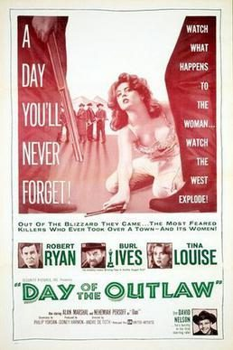

Day of the Outlaw
Starring: Robert Ryan, Burl Ives, Tina Louise
Director: André de Toth
Writer: Philip Yordan
Producer: Sidney Harmon
Day of the Outlaw is a 1959 American Western film starring Robert Ryan, Burl Ives, and Tina Louise. It was directed by Andre de Toth; this was de Toth's final Western feature film.
Trivia
- The film was based on a 1955 novel of the same title by Lee Edwin Wells (1907-1982), that also ran in several newspapers as a serialized story in the fall of 1955 and others in the late summer 1956.
- Producer Buddy Adler originally purchased the film rights as a vehicle for Robert Wagner.
- Philip Yordan read the novel and insisted on writing a script based on the book.
Filming Locations
- Filming took place in central Oregon at Dutchman Flat and Todd Lake Meadows near the town of Bend in late November and early December 1958, with Leon Chooluck, the second unit director, doing many of the long exterior shots.
Previous Showings
1 Run • 1 Festival
261 tickets sold
All runs on record (1):
- December 4 - 5, 2025 · 261 ticketsClassic Westernsw/ The Last Hunt